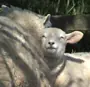
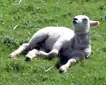
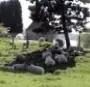
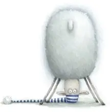

Russell the Sheep
The original story of a sheep who cannot sleep.
Paperback ISBN 9780062392435
Board book ISBN 9780061709968
Hardcover ISBN 9780060598488
UK edition ISBN 9780007206223

Rob Scotton's
The woolly hero of Frogsbottom Field. Russell cannot get to sleep, so he counts things. His feet. The stars. Every sheep in the field. Then, on a snowy night in Firefly Wood, he saves Christmas.
Where to buy
Russell is baa‑aack
Santa Claus's sleigh crashes in Firefly Wood and the Christmas Spell is broken. To Russell's dismay, Santa declares that Christmas must be cancelled.
But our fleecy hero doesn't give up easily, and he soon has a woolly idea that just might save the day. Go Russell!
So how did it all begin?
I was riding my bike through a field in Rutland, near where I live, playing my usual game of ‘Dodge the Woolly Thing’, when it occurred to me, yet again, that there must surely be a story to be found in this flock of woolly critters staring so disdainfully at my progress. Then I dismissed the idea… again. After all, who wants to read a story about a flock of sheep? They eat, they stare, they eat. Great material for a story? Not!
Just then, I saw a peculiar thing: a group of sheep sheltering from the sun in the shadow of a tree. ‘Curious,’ I thought, and sat for a while to see if the sheep would follow the shadow as the sun moved overhead. Know what? They did, and I got to thinking. Maybe there was an idea amongst all that wool after all. Nah! I thought on. A flock of sheep would be pretty dull. Anyway, they would need a playful name, and what would I call them? Worryingly, that was the moment the words ‘Frogsbottom Sheep’ leapt out of nowhere and slapped me around the head.
Frogsbottom Sheep? Why not? It sounded silly, but in a good way! There was bound to be a frog or two in the field, perhaps even a whole pondful of the little guys. A frog would make a good visual contrast to a big woolly sheep, and children would certainly giggle at the ‘bottom’ part. Well, you have to play to your audience.
Hmm. I began to ponder. I would need one special sheep to stand out from the flock: a star, a hero, a character of depth, intensity and spirit who could single-hoofedly bear the weight of a story. But who could it be? Wait! Maybe, just maybe, I had another thought. (It was a good day!)
Perspiration and inspiration, all on one bike ride: this was almost too much. I cycled home and rifled through a pile of my old greetings-card designs until I found the one I was looking for, a simple sheep character on an Easter card that I had painted in a previous life. Using that as a starting point, I began to doodle. Before long, a boggle-eyed character was staring back at me from the screen. He was such a simple, uncomplicated and ridiculous soul that a name came to mind instantly: ‘Russell the Sheep’. I cringed at the awful pun, but at least I had a working title. As the weeks passed, other names came along, but none seemed to fit. Russell the Sheep it was, and Russell the Sheep it stayed.
So I had my hero, Russell the Sheep. I had found him a home in Frogsbottom Field and a supporting cast of other sheep and even a little frog. Now just one thing was missing: a story.
For that, I needed a tale rich in substance and awash with humour, with an engaging plot woven with twists and unforeseen diversions. A story that would send our woolly hero on a rollercoaster of emotional extremes, with us, the readers, sitting right there beside him. And when Russell finally won through, as he must, we would applaud his efforts and still be cheering for him long after the final page was turned.
Hmm. Not an easy brief. But then… what if Russell couldn’t fall asleep, no matter how hard he tried? Maybe he could count things…
By Granny Oldwool’s beard, there may be something there…
Oh, and of course, there’s also a little frog… and an ant. Job done!



The original Frogsbottom sheep that Rob came across as he cycled through a field in Rutland, England. It all started with these guys.

Melbourne and Brisbane, Australia
Russell's Christmas Magic was the theme for Myer's spectacular Christmas windows in Melbourne and Brisbane. Firefly Wood, the crashed sleigh and a flock of woolly helpers, built as moving window displays by Stage One Productions.
Russell even made the national news. The reindeer rock.
Russell the Sheep was first published by HarperCollins in the US and HarperCollins Children's Books in the UK. Choose your country to see the right editions.
The original story of a sheep who cannot sleep.
Paperback ISBN 9780062392435
Board book ISBN 9780061709968
Hardcover ISBN 9780060598488
UK edition ISBN 9780007206223
Russell goes looking for treasure in Frogsbottom Field.
Hardcover ISBN 9780060598518
UK edition ISBN 9780007206254
Santa crashes in Firefly Wood, and Russell has a woolly idea.
Hardcover ISBN 9780060598549
UK edition ISBN 9780007262946
Links open the retailer’s own site. Availability, editions and prices are set by each retailer.